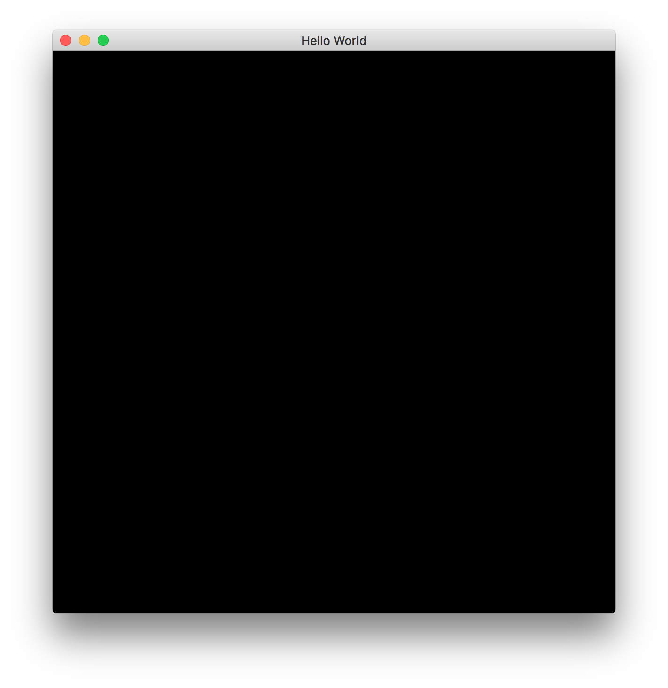

Haskell and OpenGL and Hello World
OpenGL is a complicated API: here is why
1. You need to know C/C++ well, and C++ is very complicated language
2. You need to have to deep knowledge about C/C++ such as memory management.
2. You need to know some graphic knowledge
3. You might need to know some low level knowledge such as memory management,
caches and system deriver etc.
4. and more...
Haskell is weird language for beginner if you never program functional language before.
1. Haskell types is very strict. There is good and bad thing ...
2. there are many terminologies are new for traditional programmer. For examples,
function is first class, partial function, monoid, monad, functor, applicative functor etc.
3. how you design the program is different than the mainstream language such as C/C++/Java etc.
4. many programming technics are hard to understand well since it is related to Category Theory.
For examples, Isomorphism, Homomorphism, catamorphsim...What the hell is that?
even though you did not need any category theory to be good Haskell programmer,
category theory does help a lots.
If you combine complicated API and difficult Programming language, it implies it is harder to learn both at the same time.
Why we should use OpenGL in Haskell, and why not just use it C/C++.
Here are a few reason to use OpenGL and Haskell together:
1. Haskell is very concise and expressive language.
2. It has very powerful type system, what does it mean?..
3. Haskell can be compiled to binary native code.
4. GHCi is powerful, what does it mean?
5. Haskell has Foreign Function Interface FFI for C, this is how OpenGL can be binded into Haskell.
module Main where
import Control.Monad (unless)
import Graphics.Rendering.OpenGL as GL
import qualified Graphics.UI.GLFW as FW
import System.Exit
import System.IO
-- | Fri Dec 7 20:13:55 2018
-- | File: /Users/cat/myfile/bitbucket/haskell/opengl_helloworld.hs
-- | Compile: runh opengl_helloworld.hs
unless' :: Monad m => m Bool -> m () -> m ()
unless' action falseAction = do
b <- action
unless b falseAction
maybe' :: Maybe a -> b -> (a -> b) -> b
maybe' m nothingRes f = case m of
Nothing -> nothingRes
Just x -> f x
-- type ErrorCallback = Error -> String -> IO ()
errorCallback :: FW.ErrorCallback
errorCallback err description = hPutStrLn stderr description
mymain :: IO ()
mymain = do
succInit <- FW.init
if succInit == False then exitFailure else do
mw <- FW.createWindow 600 600 "Hello World" Nothing Nothing
maybe' mw (FW.terminate >> exitFailure) $ \window -> do
FW.makeContextCurrent mw
mainLoop window
FW.destroyWindow window
FW.terminate
exitSuccess
mainLoop :: FW.Window -> IO ()
mainLoop w = unless' (FW.windowShouldClose w) $ do
(width, height) <- FW.getFramebufferSize w
viewport $= (Position 0 0, Size (fromIntegral width) (fromIntegral height))
GL.clear [ColorBuffer, DepthBuffer]
FW.swapBuffers w
FW.pollEvents
mainLoop w
main = mymain
The above program literately do doing, but it contains lots of info about OpenGL and Haskell.
start from small.
1. The header includes OpenGL and GLFW
OpenGL is just FFI binding for C API, it is one to one mapping, not sure about that.
GLFW is window management API to simplify OpenGL to interacts with Window System such as
creating windows, contexts and surfaces, receiveing input and events.
2. main = mymain
all Haskell program starts with main which a function return IO(). In Java sense
IO() main(){
return IO()
}
3. mymain is just alias name for main::IO()
4. mainLoop::FW.Window -> IO()
mainLoop is main function for OpenGL code.
All rendering code should be here in mainLoop
5. FW.init, what is that?
FW.init is GLFW function, it just initialize function
if FW.init return false, then stop do anything otherwise proceed
6. what is maybe' here
maybe' :: Maybe a -> b -> (a -> b) -> b
maybe' m nothingRes f = case m of
Nothing -> nothingRes
Just x -> f x
first parameter is Maybe a, second parameter is b(it could be anything)
the third is a $f$ function with one parameter
For Maybe a, there are two cases to consider:
1. Nothing, it means there is something wrong, stop do anything useful.
2. Just x, it means it is good to move forward.
From the code:
mw <- FW.createWindow(...)
The signature for createWindow:
createWindow::Int->Int->String->Maybe->Maybe Monitor -> Maybe Window -> IO (Maybe Window)
mw is (Maybe Window)
We can review definition of Maybe
data Maybe a = Nothing | Just a =>
Maybe Window = Nothing | Just Window
FW.createWindow => creates a window context
If it can not create window, then it will return Nothing
otherwise, it will return Just (window context)
(FW.terminate >> exitFailure) => exit the process and set the exit code to 0 => echo $? => 0
or
exitWith(ExitFailure 3) => echo $? => 3
see: exitWith::ExitCode -> IO a
data ExitCode = ExitSuccess | ExitFailure a
makeContextCurrent::Maybe Window -> IO()
FW.makeContextCurrent mw
make the context of specified window the current one for the calling thread.
The rest of three functions are just house cleaning.
maybe' mw
Picture is worth a thousand words
